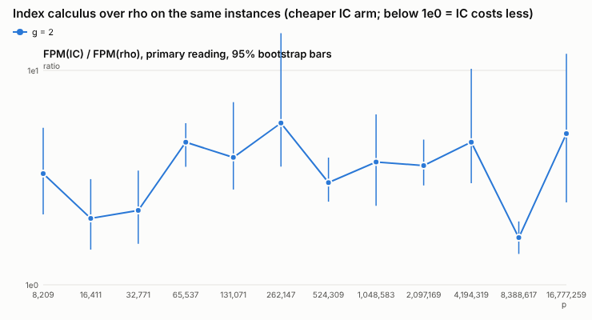
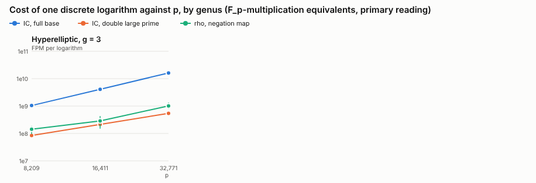

Status: [pcc:unverified] (shared 4-vCPU host, no
independent replay). Protocol PROTOCOL.md, frozen
30e46a98d6; Amendment 1 (full-base arm dropped above 2^18,
before any datum of those cells) in the same file. Binary sha
61ccabd2…. Data scale_g2.jsonl,
scale_g2b.jsonl, scale_g3.jsonl;
g2_analysis.json, g3_analysis.json;
tables_g2.md, tables_g3.md;
data.sha256. Bench record
benchmarks/records/20261115T0317Z-genus-ladder-scale.json.
234 runs, all certified, 0 skipped. Genus 2: 12 primes 8209 …
16,777,259 (arms a to 262,147; c and R throughout), 3 curves × 2 seeds,
h <= 8. Genus 3: 8209, 16411, 32771, arms a, c, R. Wall:
1h50 + 1h for genus 2 (the full-base solve alone was 54 min at 262,147),
about 1h for genus 3 (dominated by the O(p²) point count of the order
search).


Exponents in p (FPM primary), 8209 … 2^24: rho
0.975 [0.908, 1.037], double large prime + prefilter
1.004 [0.991, 1.020] (trials 0.980); full base 1.97
(8209 … 2^18). Ratio 2LP/rho (FPM mid): 3.3, 2.0, 2.2, 4.6, 3.9, 5.7,
3.0, 3.7, 3.6, 4.6, 1.7, 5.1 from 8209 to 2^24, intervals always above
1, no trend. The linear-algebra share of the 2LP arm is 0.08–0.20
throughout. Reading: at genus 2 both methods are p^1 and
the method is a constant factor behind in this instrument; the cost is
the relation walk (one Cantor step per trial, half the trials split,
each split a single edge of a large-prime graph with about
p/2 vertices), not the algebra. Nothing here suggests a
crossing at any size.
p^{1/12}… measured as
p^{0.07} and the arm is below rho| p | 2LP+pre FPM | rho FPM | 2LP / rho [95%] | FPM band | LA share of 2LP |
|---|---|---|---|---|---|
| 8209 | 8.42e7 | 1.43e8 | 0.591 [0.437, 0.870] | below | 0.75 |
| 16411 | 2.14e8 | 2.89e8 | 0.741 [0.492, 1.42] | unresolved | 0.76 |
| 32771 | 5.42e8 | 1.01e9 | 0.537 [0.407, 0.686] | below | 0.77 |
Exponents: 2LP+pre 1.344 [1.334, 1.358] (theory
4/3), rho 1.413 [1.145, 1.751] (theory 3/2; three
primes, six runs each), full base 1.98. GAE band: unresolved at every
prime (above at w = 1). Three quarters of the 2LP arm’s
primary cost at genus 3 is the linear algebra, which the SGE study
(research/genus_ladder_sge_20261115/) cuts to about a
quarter: the two results compose, and the composition is the next
measurement.
| id | outcome |
|---|---|
| X1 | held: 234/234 certified, no exhaustion |
| X2 | held: rho 0.975, arm c 1.004 (arm a’s clause on 8209 … 2^18 only, by
Amendment 1: 1.97, not a p^1 quantity, and not what X2 was
about) |
| X3 | failed: ratio at 2^24 (5.1) is not 2× smaller than at 8209 (3.3) |
| X4 | failed: no prime with arm c below rho across the
FPM band at genus 2; distance remaining 3–5×, flat in
p |
| X5 | held: c exponent 1.344 in [1.20, 1.45]; rho 1.41 in [1.35, 1.65]; below across the FPM band at 32771 with ratio 0.537 ≤ 0.6 |
| X6 | failed: the genus-2 LA share stays below 0.2 (a 2-LP relation at genus 2 carries no base column, so cycle rows are short) |
Three curves × two seeds per cell; h <= 8; rho’s
genus-3 exponent interval is wide on three primes; shared host; the FPM
prices are stated conventions.